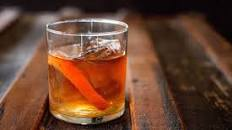

Old Fashioned

Description
Timeless. Delicious. Sophisticated. Three perfect words to describe the perfect cocktail.
Don Draper knew, and so should you. Here it is, the recipe for the perfect Old Fashioned
Ingredients
- 2 oz bourbon Old Forester or your preference
- 1 sugar cube
- dash bitters
- Twist of orange peel
- Splash cold water
- Ice, large cube style if available
- Place sugar cube into a rocks glass.
- Shake a dash of bitters onto the sugar cube.
- Splash water onto sugar cube.
- Pour bourbon into glass.
- Muddle.
- Add ice.
- Take orange twist and twist over the mixture a few times to get a good spritz.
- Place orange twist in cocktail as garnish.
- Enjoy responsibly